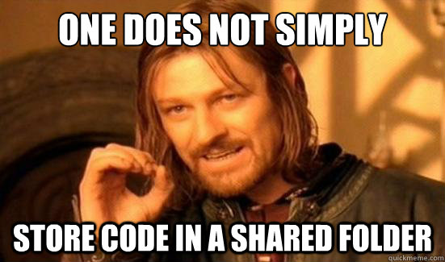
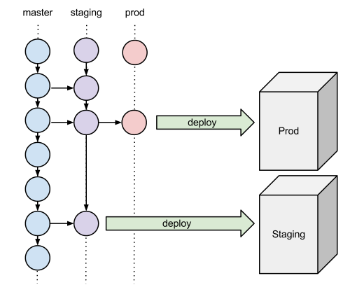

L'être humain est
Les ordinateurs sont


hooks pour définir ses propres commandes

pear channel-discover pear.drush.org
pear install drush/drush
http://www.drush.org/drush_windows_installer
sudo aptitude install drush
Pear est la solution la plus simple pour avoir rapidement accès à la dernière version.
Mais Pear est brisé sur MacOSX Mountain Lion
sudo cp /private/etc/php.ini.default /private/etc/php.ini
sudo php /usr/lib/php/install-pear-nozlib.phar
pear config-set php\_ini /private/etc/php.ini
pecl config-set php\_ini /private/etc/php.ini
sudo pear upgrade-all
$ drush --root=/path/to/drupal --uri=dev.mydrupalsite.com status
Drupal version : 7.15
Site URI : http://dev.mydrupalsite.com/
Database driver : mysql
Database hostname : localhost
Database username : drupal
Database name : drupal
Default theme : garland
Administration theme : seven
PHP configuration : /etc/php-cli.ini
Drush version : 5.7
Drush configuration : /home/fry/.drush/drushrc.php
Drush alias files : /home/fry/.drush/aliases.drush.rc
Drupal root : /path/to/drupal
Site path : sites/default
File directory path : sites/default/files
$
drushrc.phpaliases.drushrc.php$aliases['dev'] = array(
'root' => '/path/to/drupal',
'uri' => 'dev.mydrupalsite.com',
);
$aliases['live'] = array(
'root' => '/other/path/to/drupal',
'uri' => 'mydrupalsite.com',
'remote-host' => 'myprodserver.myisp.com',
'remote-user' => 'publisher',
);
drush @dev status
drush @dev sql-dump > backup.sqldrush sql-sync @prod @devdrush rsync @dev @stagedrush rsync ./ @stage:%files/imgdrush @dev clear-cache alldrush @dev updatedbdrush make mydrupalsite.make

Le déploiement se fait par mise à jour d'une dépot Git local au serveur sur lequel on déploie.
Récupérer les derniers changements dans un dépôt de code central depuis le serveur sur lequel on déploie.
Envoyer les derniers changements dans un dépot local vers le serveur sur lequel on déploie.
Permet de facilement gérer un serveur de dépôts de code centralisés avec un contrôle d'accès par utilisateurs et groupes d'utilisateurs.
Gitosis est mort, longue vie à Gitosis!
Dernier commit est en 2009. Gitolite est complet et fonctionne bien.

Librairie Python permettant d'automatiser des tâches sur un ou des serveurs distants.
from fabric.api import run
def host_type()
run('uname -s')
$ fab -H localhost,linuxbox host_type
[localhost] run: uname -s
[localhost] out: Darwin
[linuxbox] run: uname -s
[linuxbox] out: Linux
Done.
Disconnecting from localhost... done.
Disconnecting from linuxbox... done.
Exemple de script pour pousser la DB sur un serveur distant
from fabric.api import *
env.use_ssh_config = True
@task(default=True)
def pushDB(env='local'):
local('drush @via sql-dump --result-file=/tmp/via-dump.sql')
db_connect = local('drush sql-connect --uri=http://supersite.' + env +
'.drupalcampmontreal.org', True)
local(db_connect + ' < /tmp/via-dump.sql')
Les dernieres versions peuvent lire dans la config SSH du client initiant les commandes.
Host supersite.stage
HostName 10.111.222.333
User deployuser
Avec ce snippet dans votre configuration, vous pouvez vous connecter avec ssh supersite.stage sans spécifier le port, le user ou le mot de passe (si la clef SSH est authoriser).
C'est une belle technique qui reste quand même simple et flexible, mais difficile à maintenir quand le nombre de serveurs dépassent une trentaine.
Pour ceux qui veulent se rendre au prochain niveau, Jenkins est là.
Jenkins vous permet de rouler les tests et peut être inséré dans le processus avant de faire un déploiement. C'est long rouler les tests.
Il peut aussi être utiliser pour vérifier que les Coding Standards ont bien été suivis entre chacune des versions du site web.
<!-- D'autres solutions sont disponibles par contre pour aider à maintenir l'ajout de nouveau serveurs/sites. Des solutions qui sont disponibles aux sysadmins qui permettent de gérer les configurations sur leur serveurs, mais qui peuvent aussi servir à maintenir à jour
Belle solution python, probablement la plus simple.
Le nouveau site web est beaucoup plus accessible et convivial.
Belle solution ruby un peu plus complexe. Stable avec beaucoup de développement.
http://wiki.opscode.com/display/chef/Home
Beaucoup de "cookbooks" sont développés par la communauté
http://community.opscode.com/cookbooks
Beaucoup d'autres solutions existent (cdist, puppet, bcfg2, etc) avec des niveaux de complexité variés.
http://en.wikipedia.org/wiki/Comparison_of_open_source_configuration_management_software
Vagrant permet de créer des environnements virtualisés pour reproduire les serveurs de productions, mais avec le développeur en tête.
Le développeur peut lancer Vagrant pour avoir un environnement de développement identique à celui de la production. Plus jamais vous allez entendre "Mais ça marche sur ma machine!"
/
#